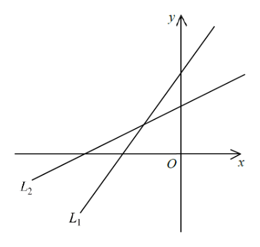

座標幾何 · 直線方程

$$L_{1}:\ y=-\frac{3}{a}x+\frac{b}{a}\quad\Rightarrow\quad m_{1}=-\frac{3}{a},\ k_{1}=\frac{b}{a}$$
$$L_{2}:\ y=-cx+d\quad\Rightarrow\quad m_{2}=-c,\ k_{2}=d$$
兩條線都向上升，故 $m_{1}>0$、$m_{2}>0$：
$$-\frac{3}{a}>0\Rightarrow a<0,\qquad -c>0\Rightarrow c<0$$
$L_{1}$ 較陡，即 $m_{1}>m_{2}$：
$$-\frac{3}{a}>-c$$
兩邊乘 $-a$（因為 $a<0$，$-a>0$，不等號方向不變）：
$$3>ac\quad\Rightarrow\quad ac<3$$
I 正確。
由圖可見 $L_{1}$ 的 $y$ 截距較高：$\dfrac{b}{a}>d$。
兩邊乘 $a$（$a<0$，不等號反向）：$b<ad$，即 $ad>b$。
II 錯誤。
$L_{1}$ 的 $x$ 截距 $=\dfrac{b}{3}$，$L_{2}$ 的 $x$ 截距 $=\dfrac{d}{c}$。由圖，$L_{1}$ 的交點在右方：
$$\frac{b}{3}>\frac{d}{c}$$
兩邊乘 $3c$（$c<0$，不等號反向）：$bc<3d$，III 正確。